Heuristically Driven Front Propagation
This tour explores the use of heuristics to speed up Fast Marching methods in 2D.
Contents
The use of heuristics for the computation of geodesic paths was introduced in
Heuristically Driven Front Propagation for Fast Geodesic Extraction Gabriel Peyre and Laurent Cohen, International Journal for Computational Vision and Biomechanics, Vol. 1(1), p.55-67, Jan-June 2008.
Installing toolboxes and setting up the path.
You need to download the following files: signal toolbox, general toolbox and graph toolbox.
You need to unzip these toolboxes in your working directory, so that you have toolbox_signal, toolbox_general and toolbox_graph in your directory.
For Scilab user: you must replace the Matlab comment '%' by its Scilab counterpart '//'.
Recommandation: You should create a text file named for instance numericaltour.sce (in Scilab) or numericaltour.m (in Matlab) to write all the Scilab/Matlab command you want to execute. Then, simply run exec('numericaltour.sce'); (in Scilab) or numericaltour; (in Matlab) to run the commands.
Execute this line only if you are using Matlab.
getd = @(p)path(p,path); % scilab users must *not* execute this
Then you can add the toolboxes to the path.
getd('toolbox_signal/'); getd('toolbox_general/'); getd('toolbox_graph/');
Ideal Heuristically Driven Front Propagation
The ideal heuristic H is the remaining distance to the ending point. It is ideal in the sense that it is as difficult to compute this distance than to solve for the original problem of extracting the geodesic.
One can however study the influence of this heuristic by replacing H by weight*H where weight<1 is a sub-optimality factor.
Load an image.
n = 300;
name = 'road2';
M = rescale(load_image(name,n));
Display it.
clf; imageplot(M);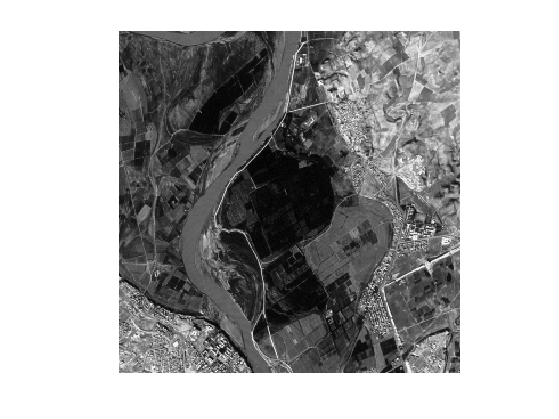
Define start and end points (you can use your own points).
pstart = [14;161]; pend = [293;148];
Compute a metric to extact the road.
W = abs(M-M(pstart(1),pstart(2))); W = rescale(W, 1e-2,1);
Display it.
clf; imageplot(W);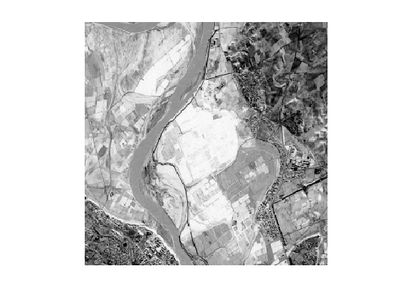
Perform the full propagation.
[D,S] = perform_fast_marching(1./W, pstart);
Extract a geodesic curve.
p = compute_geodesic(D,pend);
Display the distance and the geodesic curve.
clf; hold on; imageplot(convert_distance_color(D,M), 'Distance'); h = plot(p(2,:),p(1,:), '.k'); set(h, 'LineWidth', 2); h = plot(pstart(2),pstart(1), '.r'); set(h, 'MarkerSize', 25); h = plot(pend(2),pend(1), '.b'); set(h, 'MarkerSize', 25); axis ij;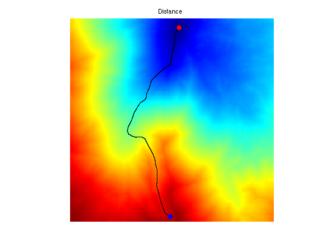
Compute the heuristic.
[H,S] = perform_fast_marching(1./W, pend);
Display the ideal heuristic function.
clf; hold on; imageplot(convert_distance_color(H,M), 'Distance'); h = plot(p(2,:),p(1,:), '.k'); set(h, 'LineWidth', 2); h = plot(pstart(2),pstart(1), '.r'); set(h, 'MarkerSize', 25); h = plot(pend(2),pend(1), '.b'); set(h, 'MarkerSize', 25); axis ij;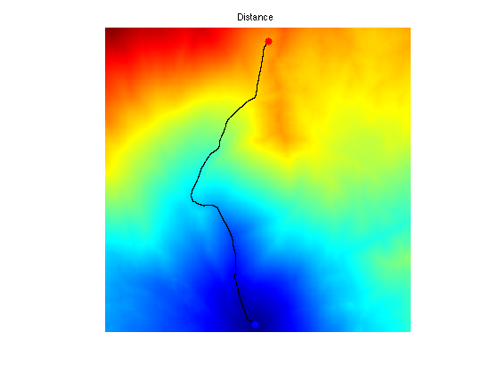
Exercice 1: (check the solution) Display the set of points satisfying D+H<=T for several value of the threshold T>=D(pend). What do you observe ?
exo1;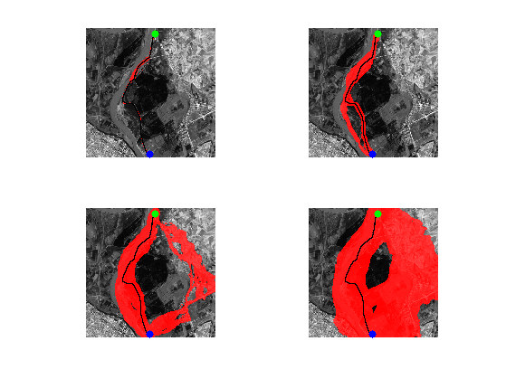
Perform the heuristically driven propagation.
weight = .9; options.end_points = pend; options.heuristic = weight*H; options.nb_iter_max = Inf; options.constraint_map = Inf+zeros(n); [D,S] = perform_fast_marching(1./W, pstart, options);
Display the region explored by the algorithm.
I = find(S<0); U = cat(3,M,M,M); U(I) = 1; U([I+n^2, I+2*n^2]) = U([I+n^2, I+2*n^2])*.3; clf; hold on; imageplot(U); h = plot(p(2,:),p(1,:), '.k'); set(h, 'LineWidth', 2); h = plot(pstart(2),pstart(1), '.g'); set(h, 'MarkerSize', 25); h = plot(pend(2),pend(1), '.b'); set(h, 'MarkerSize', 25); axis ij;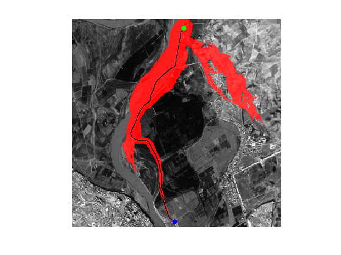
Exercice 2: (check the solution) Display the explored region for different values of weight.
exo2;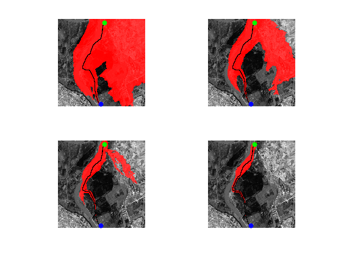
Landmark-based Heuristically Driven Front Propagation
An heuristic can be derived using a pre-computed set of distance to landmark points. The more landmark, the more accurate the heuristic is.
Compute randomized landmarks.
q = 10; landmarks = floor(rand(2,q)*n)+1;
Pre-compute distances to landmarks.
Dland = zeros(n,n,q); for i=1:q Dland(:,:,i) = perform_fast_marching(1./W, landmarks(:,i)); end
Compute the heuristic.
Dend = Dland( pend(1), pend(2), :); H = max(abs(Dland-repmat(Dend, [n n 1])), [], 3);
Display the heuristic.
clf; hold on; imageplot(H); contour(H, 10, 'k', 'LineWidth', 2); colormap jet(256); h = plot(landmarks(1,:), landmarks(2,:), 'y.'); set(h, 'MarkerSize', 15); axis ij;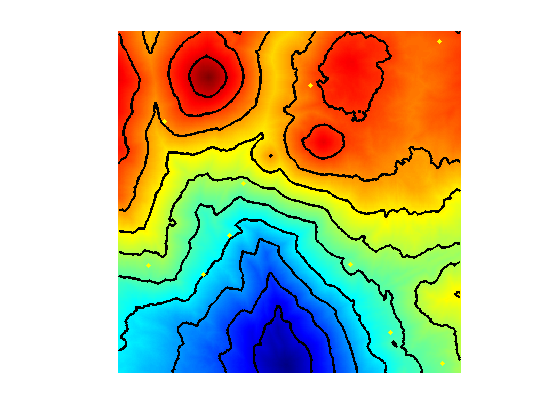
That should be compared with the optimal ideal heuristic.
[H0,S] = perform_fast_marching(1./W, pend); clf; hold on; imageplot(H0); contour(H0, 10, 'k', 'LineWidth', 2); colormap jet(256); axis ij;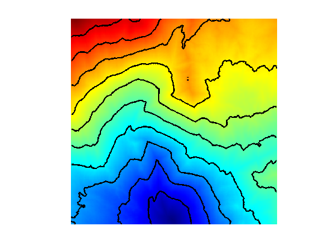
Exercice 3: (check the solution) Display the convergence of the heuristic as the number of landmark increases.
exo3;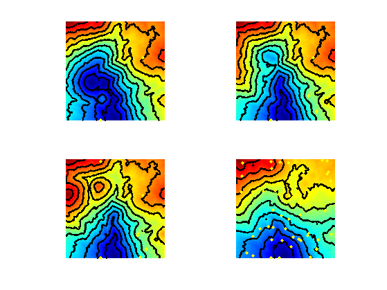
Exercice 4: (check the solution) Perform the heuristically driven propagation with a landmark-based heuristic.
exo4;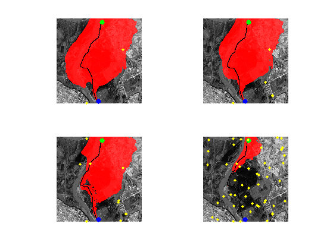
Exercice 5: (check the solution) Find a strategy to find optimal seeding position for the landmarks.
exo5;
Heuristics on 3D Meshes
It is possible to use the same heuristics to drive the computation of geodesic paths on 3D meshes.
Exercice 6: (check the solution) Perform the landmark-based heuristically driven propagation on a 3D mesh.
exo6;